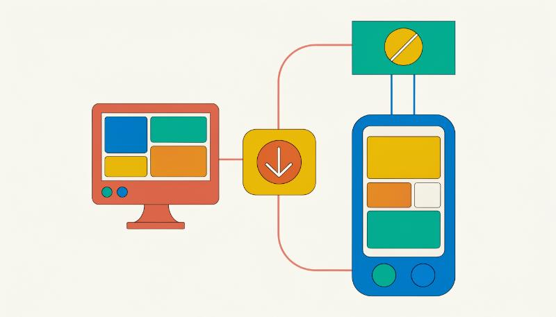

![NTK]()

Al Jazeera Noticed Odd Traffic on Its Journalists' Devices in 2024. It Took a Year and a University Lab to Find Out Why.
Al Jazeera's internal technology team first spotted unusual patterns on devices used by some of its journalists in 2024, and the patterns continued into 2025. The network then asked Citizen Lab, a research unit at the University of Toronto, for a deeper look, and handed over its network logs from the attack period. Those logs gave the researchers what they called a clear temporal signature of how the attack ran (Al Jazeera Online).
What they reconstructed was a first. An Israeli ad company, Discover-Tech, bought ordinary-looking ads and used them to route chosen targets to servers run by Candiru, a spyware maker the U.S. Commerce Department blacklisted in 2021. At least 45 Windows devices at Al Jazeera were compromised in 2024 and 2025 (The Jerusalem Post). Nobody had to click anything. The ad only had to load, and the infection took seconds (The Guardian). It is the first technical evidence that targeted advertising can deliver a zero-click attack (The Verge).
Al Jazeera cooperated voluntarily, and the network said that cooperation helped verify and publicly document the attacks. Nobody else named in the research has said anything. Discover-Tech, its chief executive Dekel Boni and Candiru's owners all went unanswered when reporters called.
The Ad Market Was the Delivery Truck, and It Reached Far Beyond One Newsroom
Al Jazeera was where the researchers could prove infection, because it had kept the logs. The reach of the ads suggests it was not the only place they landed.
Discover-Tech's ads, usually for ordinary things like phones or earpods, ran on more than 120,000 websites and 75,000 apps, Citizen Lab said (The Jerusalem Post). Confiant, the New York ad security firm that ran a parallel investigation, found the ads appearing in networks used by the Pentagon, the International Atomic Energy Agency and the International Criminal Court. The researchers stressed that an ad appearing on a network does not mean that organization was targeted. Jerome Dangu, Confiant's cofounder, put the volume at 10 million ads a day and said "hundreds of millions of people" were likely touched by the company (The Jerusalem Post).
The platform behind it, called Controlium, let spyware clients profile and identify millions of people, then pick individuals for infection by IP address, mobile ad ID or browser identifier (The Verge). Wolfie Christl of Citizen Lab called it disastrous that major ad vendors failed to detect the operation for years (The Guardian).
Five Ad Vendors Pulled the Plug After the Report. The Spyware Industry Around It Is Still Running.
The companies that carried the ads moved only once the findings were public. Five ad vendors and industry organizations disconnected Discover-Tech (NBC News). Google and Comcast's Beeswax removed it, and IAB Europe suspended it from its approved vendor list (The Verge).
Candiru's spyware has previously been used against at least 100 journalists, dissidents and others in several countries (Al Jazeera Online). Citizen Lab had earlier reported that the phones of 36 Al Jazeera staff were hacked with Pegasus, made by another Israeli firm, NSO Group (NBC News). Two weeks ago the same pattern turned up in Serbia, where at least 14 student organizers, activists and opposition figures were targeted ahead of local elections, and a student's phone carried a zero-click version of Pegasus (Reuters). Both companies were blacklisted by Washington in 2021, and both are still selling.
Five vendors cut Discover-Tech loose within hours of publication. The ad market has less reason to stay vigilant now than it did before.
Discover-Tech's Customers Will Move to a Successor Company Within Weeks, and the Ad Industry Will Treat the Cutoff as Closure
Disconnecting one reseller does little to a pipeline built on buying ads and routing traffic. The technique needs a demand-side account, a few exchange connections and a spyware partner, and Candiru and its peers already have the third. Discover-Tech was founded in 2020, so the stack is only six years old and cheap to rebuild under a new name. The most likely outcome is that a successor shows up on the same exchanges before the end of the year, unannounced, as the clients that used Controlium look for another door.
Nobody in the ad business is rewarded for catching it. Citizen Lab's Wolfie Christl said major vendors failed to detect the operation for years (The Guardian). Google and Beeswax now get a clean headline about acting fast, which is the only thing the next review will ask them for. Expect statements about "strengthened vetting" in the next week and no published audit of who else bought through the same exchanges. Advertisers whose brands ran alongside these ads lose the most, because they cannot learn from the vendors whether their own audiences were exposed.
Washington Will Not Act on Candiru This Month, Which Leaves Al Jazeera's Newsroom, Not a Regulator, Holding the Bill
Candiru has been on the Commerce Department's blacklist since 2021, and it kept operating through 2024 and 2025 anyway. The listing restricts American suppliers. It does not stop an Israeli firm buying ad space from another Israeli firm. NSO's case is the same: blacklisted the same year, sold to an American investment group in 2025, still operating from Israel under Israeli rules (Reuters). Nothing in the record suggests a third round of listings would work differently than the first.
What does change is the burden on the victims. Al Jazeera told staff it will keep protecting its employees and systems, which in practice means more forensic work, more device audits and more cost, paid by a news organization that is itself a political target in the region. Natalia Krapiva of Access Now called for urgent technical, legal and regulatory measures (NBC News), and the likeliest response is letters from lawmakers and a hearing request, not a rule.
The same logic reaches the next election. Serbia votes on parliamentary seats in October, and the activists there had a zero-click Pegasus implant on a student's phone before the March vote. Newsrooms and campaigns that cannot afford a Citizen Lab will find out about their own infections last.
Doors the Discover-Tech findings opened that were shut a month ago
The Ad Exchanges' Own Logs Are Now the Best Evidence Anyone Has, and Al Jazeera Just Showed Victims How to Get at Them
Until this week, a newsroom that suspected spyware had no template for proving it. Al Jazeera built one. Its technology team noticed odd traffic, kept the network logs, and handed them to Citizen Lab, which reconstructed the attack from them. That sequence is now public, with a named lab and a documented result. Any outlet running its own logging can copy it, and Citizen Lab said Discover-Tech inadvertently exposed its own authentication logs to the internet (The Jerusalem Post).
Put those two facts together and a door opens that was closed last month. Newsrooms and rights groups can check their logs for the Discover-Tech signature, and researchers now know which exchange connections to ask about. The same exposed logs showed where some of the firm's users might be based. Each infection a newsroom confirms is a plaintiff with standing and a paper trail. Natalia Krapiva of Access Now said states and tech companies whose infrastructure carried these attacks need to take legal measures (NBC News). Legal measures need evidence first, and the evidence now has a recipe.
Google and Comcast's Beeswax Have Admitted the Pipe Runs Through Them, and That Gives Advertisers a Question They Can Ask in Writing
Google and Beeswax pulled Discover-Tech from their platforms (The Verge). Removal is an admission that the account existed on their systems for years. That makes it possible for a large advertiser, or its lawyers, to ask a plain question: which of our ad placements ran next to this traffic, and which of our audiences were served these ads?
This door depends on the first. Once victims hold logs, advertisers have an outside reason to want answers. A brand whose campaign money paid for the delivery truck has a contract and a procurement department, which move faster than a congressional hearing. Neither Google nor Beeswax has a published audit to hand over, and the only thing standing between them and a request is that nobody has sent one.
An Industry Standard for Vetting Ad Buyers Is Now Reachable, Because the Trade Bodies Have Already Started Suspending Members
IAB Europe suspended Discover-Tech from its approved vendor list (The Verge). A trade body that can suspend a vendor can also write down why. Confiant, the security firm that ran the parallel investigation, has the detection method, and Citizen Lab has the technical indicators. Together they hold the draft of a vetting checklist.
This one sits furthest from the room we are standing in. It needs the advertiser pressure from the second door, because trade groups write standards when their paying members demand them. If that pressure arrives, the result would be the first shared test for whether an ad buyer is routing traffic to spyware servers. It would not stop a determined successor company. It would make that company's first week of operation visible to people paid to look.
What the people selling this machine say about it, and what their own records say back
"We're Just an Ad Company": Discover-Tech Sells Itself as Fraud-Free Traffic Delivered to Real Users
The pitch is on the company's own website, and it is a good one. Discover-Tech says it takes pride in giving clients "a gateway to global fraud-free traffic, connecting your brand with real users" (NBC News). The claim answers a real fear. Advertisers lose money to bot traffic every year, and a vendor promising clean, human audiences sounds like the cure. It is also the cover story. A firm that says it filters out fraud has every reason to profile every visitor, and nobody asks why.
Who benefits from believing it? Discover-Tech first, since it operated for six years, and Candiru second, since a spyware maker needs a delivery route that looks like commerce. Google and Comcast's Beeswax benefit too, in a quieter way. If the account was an ordinary ad buyer, then nobody failed to look.
The research says the account was never ordinary. Discover-Tech ran a second program on the side, separate from its brand advertising, that let spyware companies place malicious code on visitors' devices (NBC News). The platform that did it, Controlium, was built to profile and unmask individuals, fingerprint their devices and select them for infection by IP address, mobile ad ID or browser identifier (The Verge). Nothing about that is fraud prevention. It is target selection. The "real users" in the slogan were the product being sorted.
One detail makes the slogan harder to defend. The firm also left its own authentication logs exposed to the internet, which showed people logging in (The Jerusalem Post). A company selling clean, secure traffic could not keep its own door closed.
Confiant adds a fact the company will likely lean on: the ads it tied to Candiru were a tiny fraction of Discover-Tech's overall volume (The Jerusalem Post). That is true, and it is the mechanism, not a defense. A spyware pipeline does not need volume. It needs one ad to load on one chosen device. Everything else in those 10 million daily placements, the earpods and phone promotions, is camouflage and a reputation. The ordinary ads made the extraordinary one invisible, and no vendor on the exchanges checked whether the cover was doing its job.
The company has not answered. Messages through its contact form, a LinkedIn note and emails to chief executive Dekel Boni all went unreturned. Until it speaks, the only account of what Discover-Tech is comes from its marketing copy and the researchers' logs, and the two cannot both be right.
The oldest version of this trick is the front company. A business that sells something harmless gives cover to the one that does not, and the harmless side gets quoted whenever questions arrive.